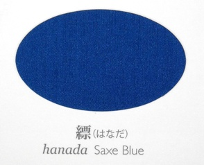

ni'o
lo poi lo no'u la .ki,iomiz. malsi cu se klama ke'a ku'o ninmu cu zungi cusku la'e di'e
.i tu'e
sei sa'a ze'i smaji se'u
le blanrkonu 
to'i sa'a sitna la'o py 太田 耕嗣 『源氏物語 千年の色: 単色』, 太田工芸, 京都, 2005 py
.i
lo blanrkonu cu du lo xekri blanrxanada toi [blanrkonu] crekrsuikanu 
to'i sa'a sitna la'o py 池上 良太 『図解 日本の装束』, 新紀元社, 東京, 2008 py toi [crekrsuikanu] dasni nanmu
noi ba'o bai gletu mi ku'o
ca'o lo nu viska le speni poi skori rinju
cu cmila tetai lo zu'o ckasu
.i .ei le speni la'u li xo paunai cu xenru
.i ku'i segu so'i za'u mei troci lo nu tolcando
gi po'o lo skori linji cu za'u mei tai'i xic.xic. danre tunta
.i mi sei rarna fa'a le speni tai lo nu gunro cu mo'i zo'i bajra
.i na'i go'i .ai
.i ku'i le nanmu zi mo'i ni'a tikpa je falgau mi
.i ca sa'e lo mu'e go'i ku
mi co'a sanji lo nu ne'i lo kanla be le speni lo carmi poi no da ka'e ve skicu ke'a xabju pe'a
.i
no da ka'e ve skicu
.i
sei sa'a ze'i smaji se'u
mi bai lo ka morji tu'a le kanla kei
ca ji'a sai co'a se xadni co slilu
.i
le speni poi le moklu do'anai be ke'a ba'e no valsi ku jai sepi'o cusku
fo zu'i pe ne'i lo zi kanla
fi pi ro cinmo cu cusku
.i ku'i
lo va carmi cu na'e ke ka fengu ke'e je na'e ke ka badri ke'e
sei sa'a ze'i smaji se'u
je po'o je'a ke pe'a lenku gusni ke'e ju'a
.i
mi ri'a lo nu se tikpa le nanmu kei naje nu se darxi pe'a le kanla skari kei
da sei mi na jimpe se'u krixa po'o
.i ce'o ro mai de'a sanji
.i ce'o ba zu ku di'a sanji
.ije za'a
le blanrkonu crekrsuikanu nanmu ba'o cliva co klama da
.i
lo se cliva zo'u nu po'o bu'u lo ckunrsugi to'i sa'a lo ckunrsugi cu du la'o ly Cryptomeria japonica ly toi [ckunrsugi] genja jibni le speni cu skori rinju
.i
mi bu'u lo spatrtake to'i sa'a lo spatrtake cu du la'o ly Arundinarieae ly noi tricu me la'o ly Bambusoideae ly gi'e xabju lo glare milxe foldi
sei tu'a la'o ly Arundinarieae ly bu'u la'o zoi Non-monophyly of the woody bamboos (Bambuseae; Poaceae): a multi-gene region phylogenetic analysis of Bambusoideae s.s.
Sarawood Sungkaew, Chris M. A. Stapleton, Nicolas Salamin and Trevor R. Hodkinson
Journal of Plant Research, 2009, Volume 122, Number 1, Pages 95-108 zoi se cusku toi
[spatrtake] ke farlu pezli ke'e cpana
lo mi betfu ba'o a'i zei rajgau
.i
va'o lo za'i go'i ku zgana le speni be sedi'o lo flira
.i ku'i
le speni kanla lo ka skari ba'e li no cu cenba
.i
ru'i ku bu'u lo lenku to'e sinma loldi lo ka xebni skari cu se jarco
.i
zo ckeji zo badri zo fengu zo'u
sei sa'a ze'i smaji se'u
na djuno lo du'u lo za se cinmo be mi cu .ei se jufra ma kau
.i
mi tai'i .ioro,ior. co'a ruble sanli gi'e klama mo'i zo'i le speni
.i tu'e
doi
.i
va'o lo nu ca ba'o co'e
na ka'e kansa ga'inai do
.i
mi .ai sai zi co'a morsi
.i ku'i
sei sa'a ze'i smaji se'u
ku'i ko ji'a co'a morsi ga'inai .e'o
.i
do viska ga'inai lo se ckeji be mi
.i
mi lo nu do po'o noi pa mei cu se cliva cu na zanru
tu'u
.i
mi .a'isai di'u po'o cusku
.i ku'i
le speni noi za'a to'e jundi ku mi catlu po'o
.i
mi sei lo cutne poi pu'o spoja gau rinju
tu'a lo barda dakfu po le speni cu sisku
.i ku'i
sei la'a le zekri lebna ba'o lebna .oi
lo barda dakfu po'onai .e ji'a sai lo bagyce'a jo'u celga'a ne'i lo spati denmi cu na'e se tolcri
.i ku'i
.ui lo cmalu dakfu po'o zo'u ne'a lo mi jamfu cu vreta zvati
.i
mi sei fe le cmalu dakfu mo'i ga'u jgari
za'u re'u cusku di'e le speni
.i tu'e
ju'a ko te lebna lo ga'inai nu jmive
.i
mi ji'a ba zi co'e li'e do
tu'u
.i
le speni ca lo mu'e tirna di'u ku sei lerci se'u jai gau tolcando fai lo ctebi
.i
.ei ri'a lo nu lo moklu lo spatrsasa to'i sa'a lo spatrsasa cu du la'o ly Sasa ly noi me la'o ly Bambusoideae ly zi'e poi lo stani be ke'a ru'i se vasru lo pilka .i la masag. srera tu'a lo se jutsi toi
[spatrsasa] ke farlu pezli cu culno kei
lo voksa la'u li no cu se tirna
.i ku'i
mi ba zi lo nu viska la'e de'u ku jimpe fi le valsi
.i le speni ru'i lo nu to'e sinma mi ku
lu ko catlu li'u noi pa mei se bacru cu cusku
.i
mi sei pi so'a mei senva joi cikna
lo po'e le speni ku blanrxanada 
to'i sa'a sitna la'o py 太田 耕嗣 『源氏物語 千年の色: 単色』, 太田工芸, 京都, 2005 py toi [blanrxanada] crekrsuikanu cutne ku sa'ei zbur. jai gau ke tunta je pagre fai lo cmalu dakfu
.i
pe'i mi ca ji'a la'e di'u de'a sanji
.i
ro mai ca lo mu'e viska lo vanbi kei
le speni ba'o ku va'o lo za'i skori rinju ku pu za co'u vasxu
.i
le pilda flira to'o lo spatrtake joi ckunrsugi denmi tsani lo stici solgu'i ni'a se cpana
.i
mi sei jai gau rinju be fai lo klaku voksa
fai lo morsi xadni cu jai gau to'e rinju je vikmi lo skori
.i ce'o
sei sa'a ze'i smaji se'u
.i ce'o mi mo
.i
la'e di'u po'o zo'u mi claxu lo bapli be lo nu cusku
.i
ro bu'a zo'u segu bu'a gi mi claxu lo bapli be lo nu co'a .uo morsi
.i
lo nu lo cmalu dakfu fa'a lo galxe gau tunta
.e lo nu mo'i ne'i lo cmana jamfu cmala'u cu xadni plipe
.e mu'anai so'o cuntu ji'a
cu te troci
.i ku'i
mi go co'a naje pu'o morsi gi'e jmive va'o ti
gi .ei la'e di'u na'e ka'e jgira
sei sa'a jikseicni cisma
.i
lo cinmo ruble no'u mi zo'u
la'a lo prami je kecti mutce censa po'u la kanzeon ji'a co'a sidju to'e pacna
.i ku'i
mi poi catra le speni ku'o
mi poi .oi bai se gletu lo zekri lebna zo'u
pau sai mo .ei
.i pau sai mi
sei sa'a ze'i smaji se'u
mi
sei sa'a ze'i smaji se'u
sei sa'a suksa je carmi ke klaku sance
tu'u
{kind=link}